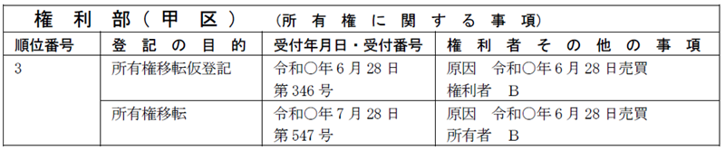
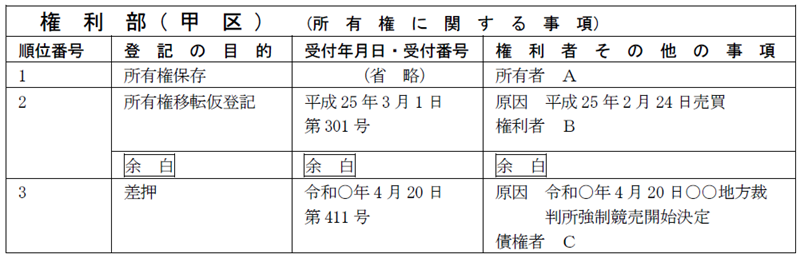
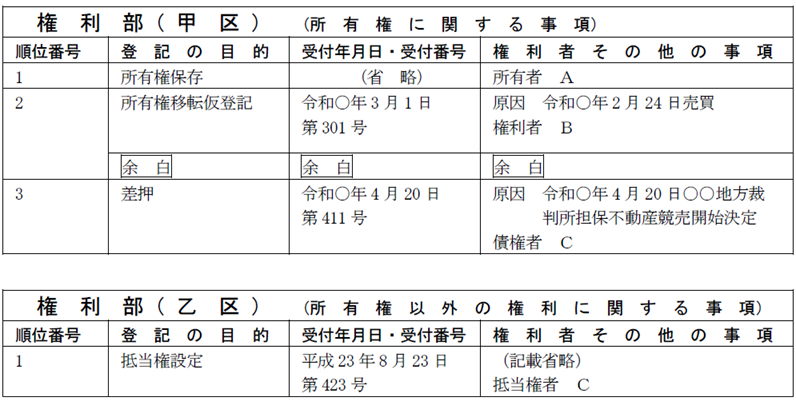
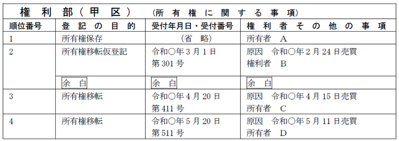
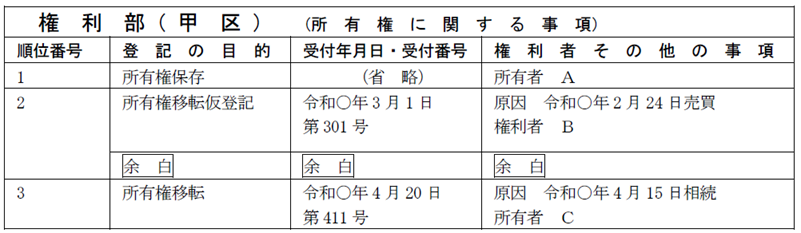
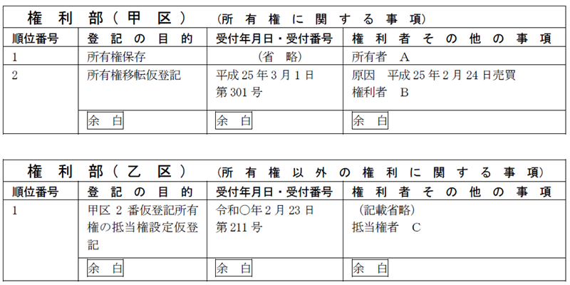
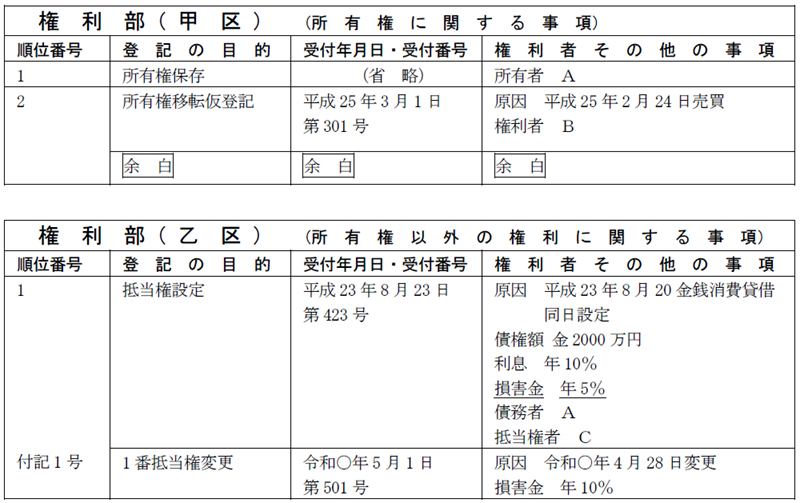
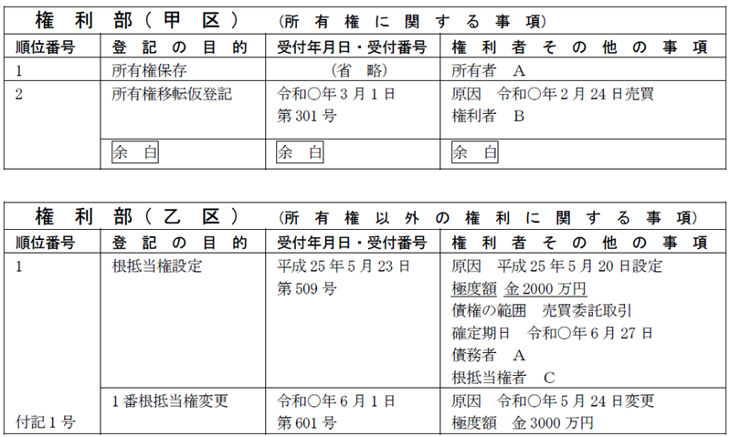
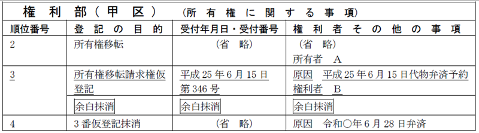

第１編 各 論
第６章 仮登記
第４節 仮登記の本登記、仮登記の変更等
1. 総説
仮登記に基づく本登記とは、実体法上又は手続法上の要件が整ったことによって、仮登記を対抗力等本来の効力を持つ登記（本登記）とすることである。
ex1.紛失していた添付情報（登記識別情報等）が見つかった（1号仮登記）
ex2.停止条件が成就した（2号仮登記）
2. 所有権に関する仮登記に基づく本登記
(1) 要件
(a) 実体法上又は手続法上の要件が整うこと
(b) 登記上の利害関係を有する第三者がある場合には、当該第三者の承諾があること（109条1項）
所有権に関する仮登記に基づく本登記においては、登記上の利害関係を有する第三者の登記は登記官の職権で抹消されるので（109条2項）、当該第三者の承諾が必要となる。
【申請例126 仮登記の本登記 仮登記の所有権移転本登記】
事例： 令和○年7月28日、ＡとＢは、Ｂを権利者、Ａを義務者とする甲土地上の3番所有権移転仮登記（登記原因は、令和○年6月28日売買）の本登記を申請した。土地の課税標準の額は、金1000万円である。

(2) 申請情報の内容
(a) 登記の目的
「○番仮登記の所有権移転本登記」又は「所有権移転（○番仮登記の本登記）」と記載する。
(b) 登記原因及びその日付
登記原因は「売買」等と記載し、日付は、所有権が移転した日を記載する。
(c) 申請人
登記権利者：仮登記権利者
登記義務者：仮登記義務者
所有権移転請求権仮登記について一部移転の登記がされている場合、当該仮登記に基づく本登記は、仮登記権利者全員が同時に申請する必要がある（昭35.5.10民3.328）。
(d) 添付情報
①登記識別情報（22条本文）
登記義務者の登記識別情報を提供する。
②印鑑証明書（不登令16条2項、18条2項）
書面申請である場合には、登記義務者の印鑑証明書を提供する。
③住所証明情報（不登令別表30添付情報ロ）
登記権利者の住民票の写し等を提供する。
④承諾証明情報（不登令別表69添付情報イ）
登記上の利害関係を有する第三者があるときは、当該第三者の承諾を証する当該第三者が作成した情報又は当該第三者に対抗することができる裁判があったことを証する情報を提供する。
(e) 登録免許税
①相続又は合併による移転の登記
不動産の価額×2/1000（登免法17条1項、別表1.1.(2)イ）
②売買等による移転の登記
不動産の価額の10/1000（登免法17条1項、別表1.1.(2)ハ）
※減免措置が適用される場合には、根拠条文も申請情報の内容としなければならない（不登規189条3項）。
(3) 利害関係人
| 仮登記に基づく本登記がなされることにより抹消される登記名義人 | 利害関係人となる |
| 仮登記の本登記がされることによって、かえって利益を受けることになる者 | 利害関係人とならない |
| 申請人 |
【利害関係人となる例】
①所有権移転仮登記後に差押えの登記がされた後、仮登記に基づく本登記を申請する場合の差押債権者（昭36.2.7民甲355）

②所有権移転仮登記前に抵当権設定登記がなされている場合において、仮登記後に登記されたその抵当権の実行による差押登記の登記名義人（昭41.6.17民甲1763）。
→ 差押えの登記が抹消されることになる以上、登記上の利害関係を有する第三者に当たる。

③5番付記1号で5番所有権移転請求権の移転請求権仮登記を受けている者が、仮登記の本登記を申請する場合において、5番付記2号で5番所有権移転請求権の移転請求権仮登記を得ている者は、登記上の利害関係を有する第三者に当たる（昭44.10.2民甲1956）。
【利害関係人とならない例】
①所有権移転仮登記がなされた後、数次にわたって所有権移転登記がなされている場合における中間の所有権登記名義人（昭37.7.30民甲2117）
→ 現に効力を有する登記名義人でなければ、権利を失っているので、登記上の利害関係はない。

②所有権移転仮登記がなされた後、相続（合併）を原因として所有権移転登記を得た者
→ 仮登記義務者の相続人は、本登記すべき義務を承継し、仮登記に基づく本登記の登記義務者（申請人）となるからである。

③所有権移転仮登記がなされた後、当該仮登記名義人が同一不動産につき根抵当権設定登記を受けた場合における、当該根抵当権登記名義人（昭46.12.11民3.532）
→ 申請人は、登記上の利害関係を有する「第三者」とはいえない。
④所有権移転（保存）仮登記がされた後、その仮登記された所有権を目的として権利の移転、設定、保存の登記（ex.抵当権の設定登記）を受けている者
→ これらの者は、仮登記の本登記がされることによって、かえって利益 を受けることになるからである。

⑤仮登記を目的とした処分禁止の仮処分の債権者
⑥仮登記所有権の移転仮登記を受けている者
当該仮登記所有権について本登記をする際、登記上の利害関係を有する第三者に当たらない。
なお、その登記後、仮登記所有権の移転仮登記を受けている者が本登記を申請する際には、第三者の承諾を証する情報の提供は不要である。前所有者である仮登記名義人が本登記をする際に、後れる登記は職権で抹消されるので、利害関係人がいないからである（109条2項）。
⑦所有権に関する仮登記後、その不動産の所有者から当該不動産を譲り受けたが、所有権の移転の登記をしていない者
→ 登記上の利害関係を有する第三者とは、登記記録上、本登記がされた場合に、その権利を害されることが明らかな者をいう。
⑧所有権移転仮登記がなされる前に抵当権設定登記がなされている場合において、仮登記後に付記登記で抵当権変更登記がなされている場合の抵当権登記名義人
→ 付記登記でなされれば仮登記権利者の承諾があったはずだからである。

⑨所有権移転仮登記前に根抵当権設定登記がなされている場合において、仮登記後に付記登記で極度額増額の変更登記がなされている場合の根抵当権登記名義人
→ 極度額の変更の登記においては、利害関係人の承諾がなければすることができないので（民法398条の5）、その時点で仮登記権利者が承諾しているからである。

(4) 登記の効力
① 条件付所有権移転の仮登記をした場合において、条件成就に基づき本登記をしたときは、「仮登記をした時」ではなく、「条件成就による所有権移転の時」に当該権利の移転を第三者に対抗することができる（最判昭31.6.28）。
② 建物の所有権移転請求権の仮登記の権利者は、本登記をするのに必要な要件を具備したとしても、仮登記のままでは、当該建物を占有している第三者に対し、その明渡しを請求することはできない。
3. 所有権以外の権利の仮登記に基づく本登記
(1) 申請情報の内容
(a) 登記の目的
「○番仮登記の抵当権設定本登記」又は「抵当権設定（○番仮登記の本登記）」のように記載する。
(b) 登記原因及びその日付
通常の設定登記又は移転登記等と同じである。
(c) 申請人
登記権利者：仮登記権利者
登記義務者： 仮登記義務者ｏｒ現在の所有権登記名義人のどちらでもよい（昭37.2.13民3.75）。
ex.Ｂ所有の不動産を目的とするＡ名義の抵当権設定仮登記がされている場合において、当該不動産がＢからＣに譲渡された場合において、仮登記に基づく本登記を申請するときの登記義務者は、Ｂ・Ｃどちらでも差し支えない。
また、抵当権の抹消登記の仮登記後に債権譲渡を原因とする抵当権移転の付記登記がある場合、当該仮登記の本登記をするときの登記義務者は、仮登記義務者又は抵当権の譲受人のいずれでもよい（昭37.10.11民甲2810）。
なお、仮登記義務者（譲渡人）が登記義務者となる場合は、譲受人の承諾を証する情報又は当該譲受人に対抗することができる裁判があったことを証する情報の提供が必要となる（昭37.10.11民甲2810）。
ex.Ａ名義の抵当権の抹消登記の仮登記がされた後に、債権譲渡を原因として当該抵当権がＢに移転している場合において、仮登記に基づく本登記を申請するときの登記義務者は、Ａ・Ｂどちらでも差し支えない。
(d) 添付情報
通常の設定登記又は移転登記等と同じである。
(e) 登録免許税
①地上権又は賃借権の登記
ⅰ 設定又は転貸の請求権の仮登記の登記
不動産の価額×5/1000（登免法17条1項、別表1.1.(3)イ）
ⅱ 相続又は合併による移転の登記
不動産の価額×1/1000（登免法17条1項、別表1.1.(3)ロ）
ⅲ 売買等による移転の登記
不動産の価額の×5/1000（登免法17条1項、別表1.1.(3)ニ）
※減免措置が適用される場合には、根拠条文も申請情報の内容としなければならない（不登規189条3項、2項）。
②担保権の登記
通常の設定、移転又は変更の登記と同じである。
(2) 登記上の利害関係を有する第三者の承諾の要否
所有権以外の権利においては、同時に2個以上の権利が存在することは可能であるので、所有権以外の権利の仮登記に基づく本登記においては、登記上の利害関係人はいない。
もっとも、所有権以外の権利の抹消又は抹消請求権の仮登記に基づく本登記においては、不動産登記法68条の適用があるので、登記上の利害関係を有する第三者がいるときは、当該第三者の承諾を要する。
ただし、その仮登記がされた後に、権利の登記が順次された場合は、現に効力を有する登記名義人のみが登記上の利害関係人となる（昭57.5.7民3.3291）
1. 総説
仮登記された権利の内容が変更された場合や、当初より誤っていた場合には、仮登記の変更・更正の登記を申請することができる。
ex.仮登記された抵当権の利息が、実際は年3％であるにもかかわらず、誤って年1％と登記された場合には、更正の登記を申請することができる。
2. 登記申請手続
(1) 登記の目的
「○番所有権移転仮登記変更」「○番所有権移転仮登記更正」等と記載する。
(2) 登記事項
「変更後の事項」「更正後の事項」と記載し、変更（更正）後の登記事項を記載する。
(3) 申請人
仮登記義務者と仮登記権利者の共同申請であるのが原則である（60条）。
ex.ＡＢ共有名義の所有権移転請求権保全の仮登記をＡ単有名義とする更正登記を申請する場合、Ａが登記権利者、Ｂ及び所有権登記名義人が登記義務者として共同申請する（登研384P.79）。
もっとも、仮登記された事項の変更又は更正の登記には、不動産登記法107条の仮登記権利者の単独申請の規定が適用されるため、仮登記権利者が単独で申請できる（昭42.8.23民甲2437）。
(4) 添付情報
仮登記権利者が単独申請する場合は、仮登記義務者の承諾を証する情報を提供する。
また、あくまでも仮登記であるため、登記識別情報を提供する必要はない。
所有権の登記名義人が登記義務者となる場合には、印鑑証明書を提供する。
3. 登記申請の可否
・所有権移転仮登記（いわゆる1号仮登記）をすべきところ、誤って所有権移転請求権仮登記（いわゆる2号仮登記）をしてしまった場合には、所有権移転仮登記に更正することができるか？
→１号仮登記を２号仮登記に更正することも、２号仮登記を１号仮登記に更正することもできる（登研130P.42）。
4. 本登記の前提としての仮登記の変更・更正登記の要否
①仮登記に基づく本登記の申請をする場合において、仮登記名義人の住所又は氏名に変更があるときは、本登記の前提として仮登記名義人の氏名等の変更の登記をしなければならないか？
→しなければならない（昭38.12.27民甲3315）。
②地目が田である土地につき、農地法第3条の許可を条件とする条件付所有権の移転の仮登記がされた後、当該仮登記の登記原因の日付よりも前の日付の登記原因で、地目を宅地とする地目に関する変更の登記がされた場合には、当該条件付所有権の移転の仮登記を所有権の移転の仮登記とする更正の登記を経れば、当該仮登記に基づく本登記の申請をすることができるか？
→できる（昭40.12.7民甲3409）。
③農地について知事の許可を条件とする条件付所有権移転の仮登記をすべきところ、誤って売買予約を原因とする所有権移転請求権の仮登記がされた場合において、当該土地が非農地となって仮登記権利者が所有者となったときは、仮登記に基づく本登記の申請をすることができるか？
→できる（最判昭52.10.11）。
④代物弁済予約を登記原因とする所有権移転請求権の仮登記がされている場合、売買を登記原因とする仮登記に基づく本登記の申請は、仮登記原因を更正しなくてもすることができるか？
→仮登記原因を更正した後でなければできない（昭55.9.19民3.5618）。
1. 総説
仮登記の原因が消滅したり、原因が無効であったり、そもそも不存在であった場合には、仮登記の抹消登記を申請することができる。
2. 申請構造
仮登記は、対抗力のない予備的な登記であることから、以下の方法による申請が認められている。
| 申請構造 | 添付情報等 |
| 共同申請 | 登記権利者：仮登記義務者 登記義務者：仮登記権利者 |
| 仮登記名義人の単独申請（110条前段） | 仮登記の登記識別情報を提供しなければならない（不登令8条1項9号） |
| 登記上の利害関係を有する第三者の単独申請（110条後段） ※仮登記義務者を含む(登研461P.117) |
仮登記名義人の承諾を証する当該仮登記名義人が作成した情報又は当該仮登記名義人に対抗することができる裁判があったことを証する情報を提供する（不登令別表70添付情報ロ、ハ） |
| 判決による登記（63条1項） | 登記上直接利益を受ける者は、仮登記を抹消すべき確定判決を得て、単独で仮登記を抹消できる |
ex.Ａ所有名義の不動産につき、Ｂが根抵当権の設定の仮登記を受けている場合には、Ａは、申請情報と併せてＢの承諾を証する情報を提供して、単独で仮登記の抹消を申請することができる（登研461P.117）。
【申請例127 仮登記の抹消 2号仮登記（利害関係人の単独申請）】
事例： ＡＢ間において、Ｂを債権者、Ａを債務者とする金銭消費貸借契約が締結され、当該債務が弁済されない場合に備えてＡ所有土地上に代物弁済予約を原因とする3番所有権移転請求権仮登記がなされていたが、令和○年6月28日、Ａが、Ｂに対して、当該債務を弁済し、ＢからＡに当該仮登記の抹消についての承諾書が渡された。

3. 申請情報の内容
(1) 登記の目的
所有権についての1号仮登記の場合「○番所有権移転仮登記抹消」、2号仮登記の場合「○番所有権移転請求権仮登記抹消」等と記載する。
(2) 登記原因及びその日付
登記原因は「弁済」、「解除」又は「放棄」等と記載し、日付は、効力発生日等を記載する。
(3) 添付情報
①登記識別情報（22条本文、不登令8条1項9号）
共同申請の場合又は仮登記権利者が単独申請する場合には、仮登記権利者の登記識別情報を提供する。
②印鑑証明書（不登令16条2項、18条2項）
共同申請の場合又は仮登記権利者が単独申請する場合、仮登記権利者の印鑑証明書を提供する。
③承諾証明情報（不登令別表26添付情報ヘ、70添付情報ロ、ハ）
登記上の利害関係を有する第三者があるときは、当該第三者の承諾を証する当該第三者が作成した情報又は当該第三者に対抗することができる裁判があったことを証する情報を提供する（不登令別表70添付情報ハ）。
仮登記義務者又は仮登記の登記上の利害関係を有する第三者による単独申 請の場合には、仮登記名義人の承諾を証する当該仮登記名義人が作成した情報又は当該仮登記名義人に対抗することができる裁判があったことを証する情報も提供する（不登令別表70添付情報ロ）。
※登記上の利害関係を有する第三者に当たる者
・仮登記のされた所有権を目的として担保権や用益物権の設定を受けた者
・所有権移転仮登記又は所有権移転請求権仮登記がされた後に、その仮登記権利者から所有権移転請求権の移転請求権仮登記を受けた者（登研383P.91参照）
(4) 登録免許税
不動産1個につき金1000円である。
なお、契約解除を原因とする仮登記及び当該仮登記に基づく本登記の抹消登記は、同一の申請書をもって不動産1個の登録免許税を納付してすることができる（昭36.5.8民甲1053）。よって、1筆の土地にされた抵当権設定の仮登記及び当該仮登記に基づく本登記について、契約解除を原因とする抹消を1件の申請情報で申請するときの登録免許税の額は、金1000円である。